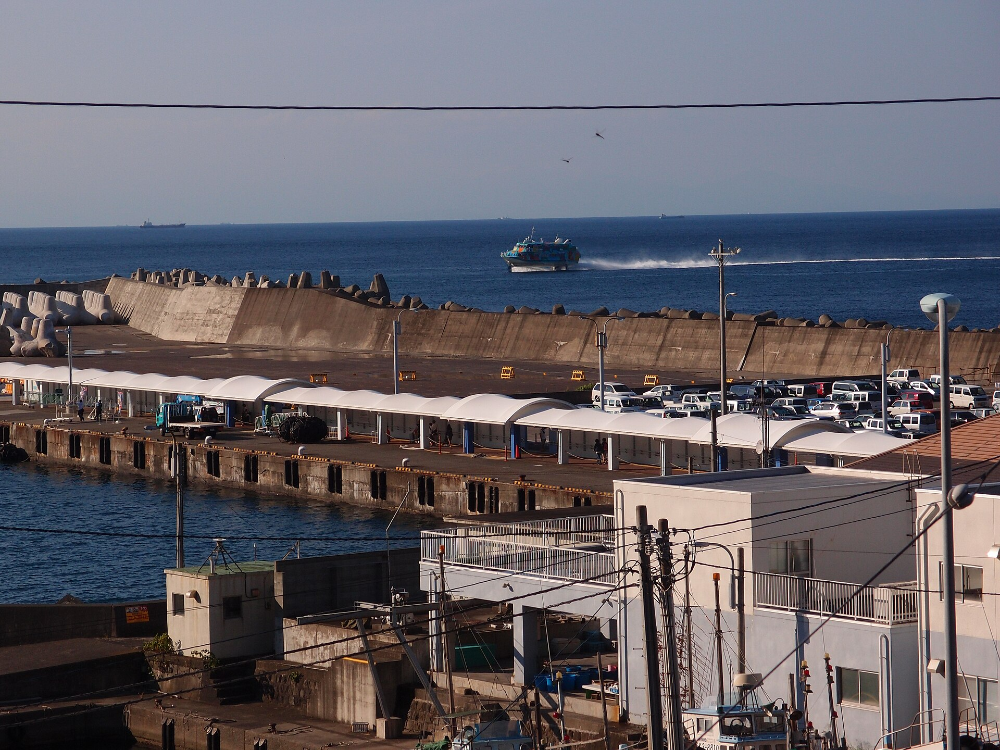
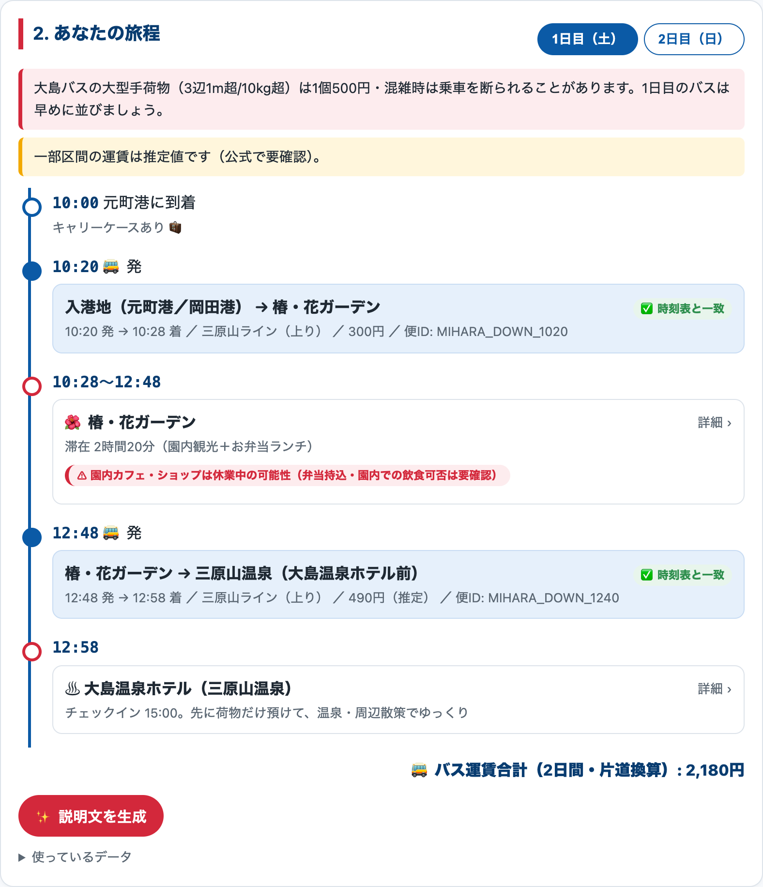
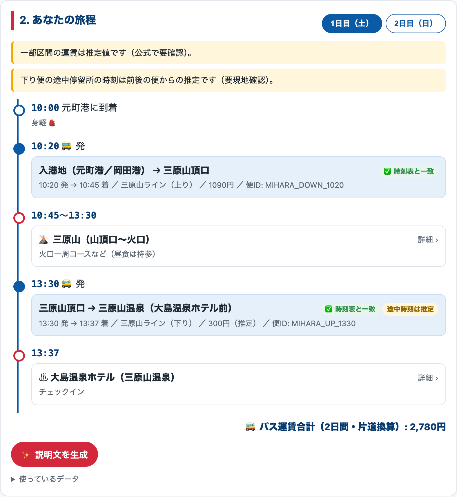
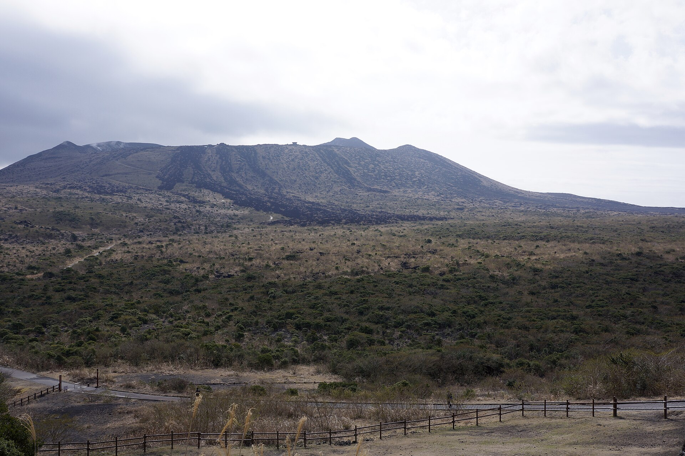

伊豆大島の来島者は年間約20万人。到着直後の数時間を無駄にする不安が、滞在満足度と島での消費機会を下げている。
必要なのは「経路」ではなく「制約付きの滞在計画」


荷物ありなら初日は平坦で港から8分の椿・花ガーデン → ホテルに預けて2日目に三原山。すべてのバス便は実在の便IDに紐づく。
| データ | 提供元 | 使い方 |
|---|---|---|
| 大島バス GTFS-JP（全路線） | 公共交通オープンデータセンター（ODPT） | 旅程のバス時刻・便ID・運行日 利用中 |
| 伊豆諸島・小笠原諸島観光客入込実態調査 | 東京都 産業労働局 | 対象人数の定量化 利用予定 |
| 東京都観光客数等実態調査 | 東京都 産業労働局 | 観光消費額でインパクト試算 利用予定 |
| 大島町関連データ（公共施設・トイレ等） | 東京都オープンデータカタログ | スポット情報の拡張 確認中 |
| 東海汽船 時刻表／大島バス 手荷物規定・運賃 | 民間（東海汽船・大島旅客自動車） | 到着時刻プリセット・荷物警告・運賃 利用中 |
行政の公共交通データを「経路」ではなく「制約付きの滞在計画」に使う。GTFSは全国の島・地方でも同じ形式 → そのまま横展開できる。
